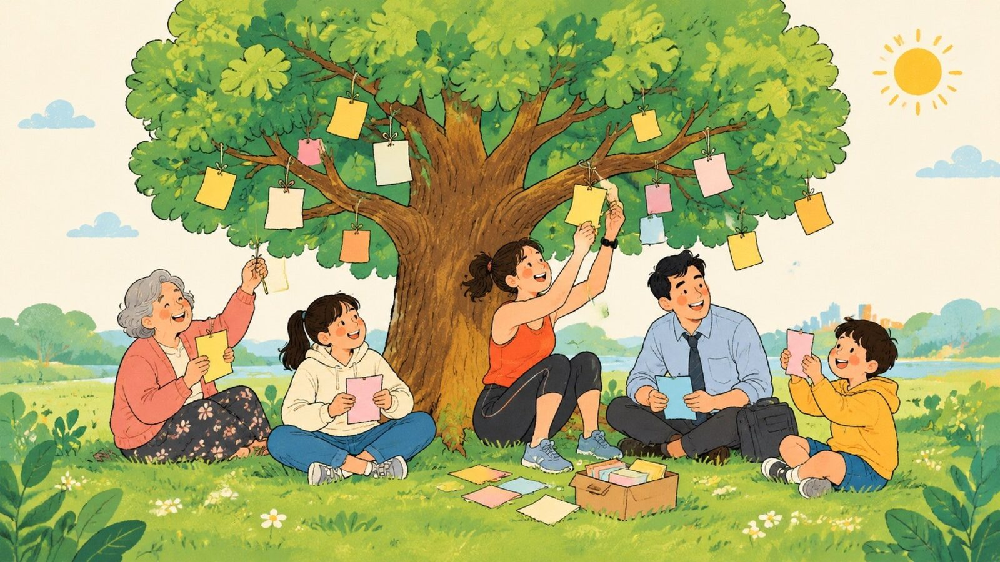
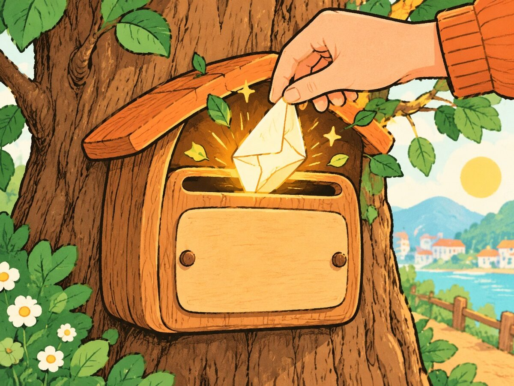
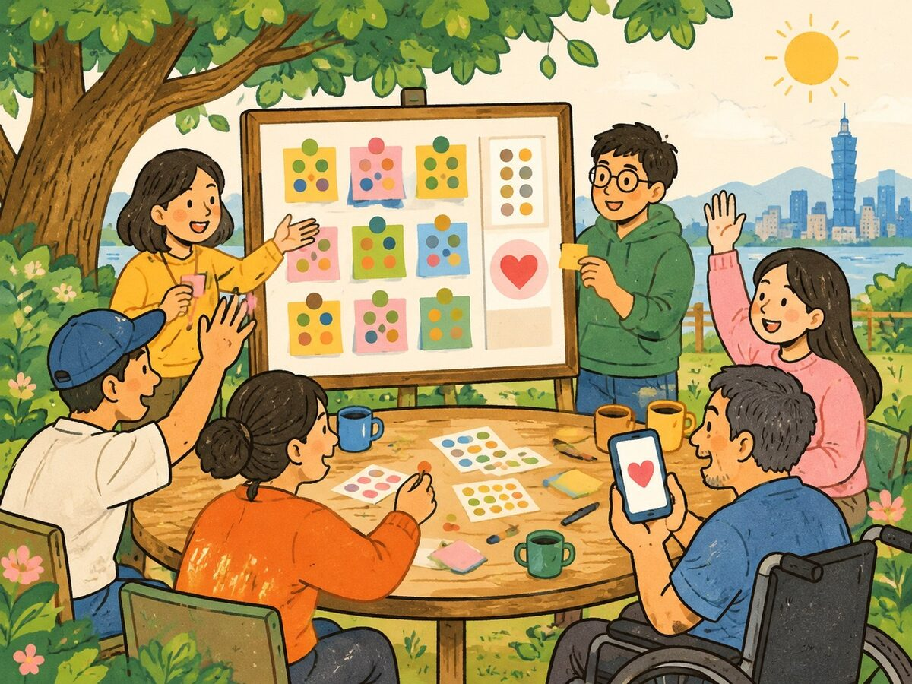
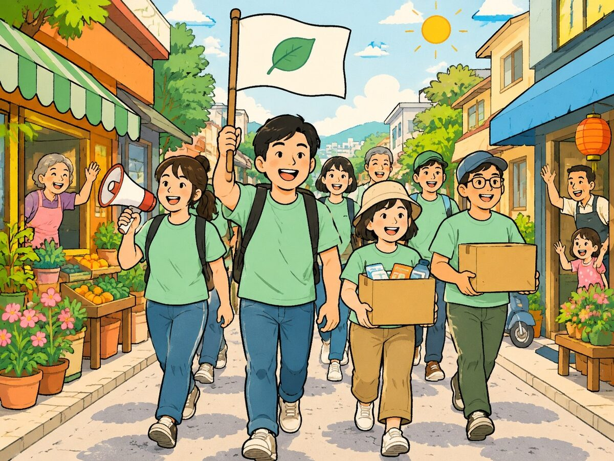
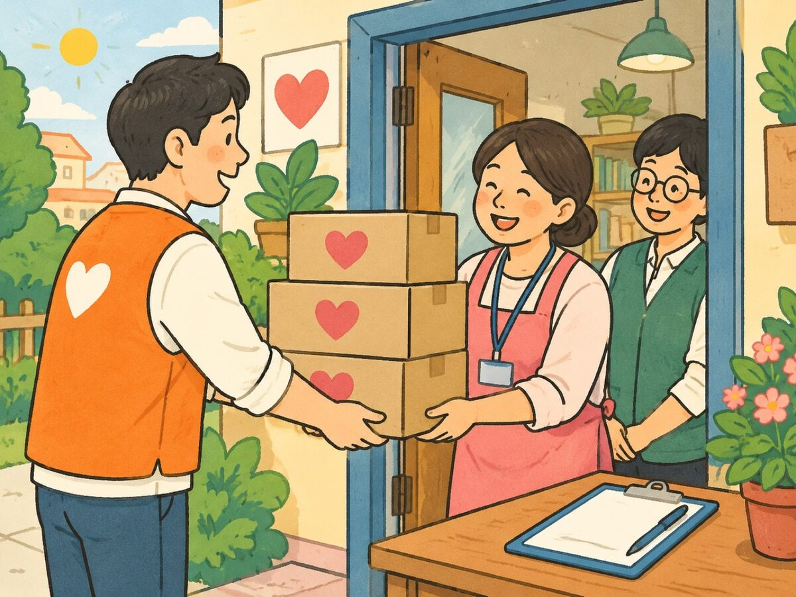
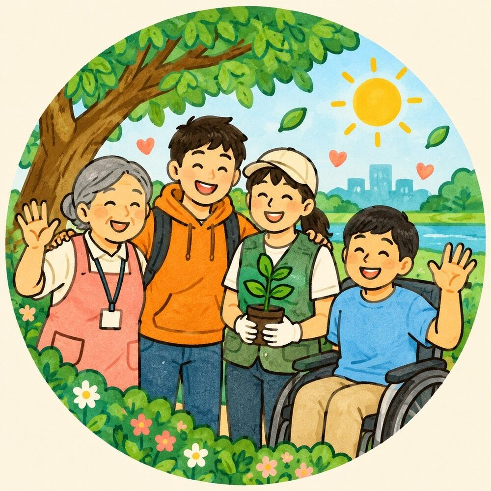
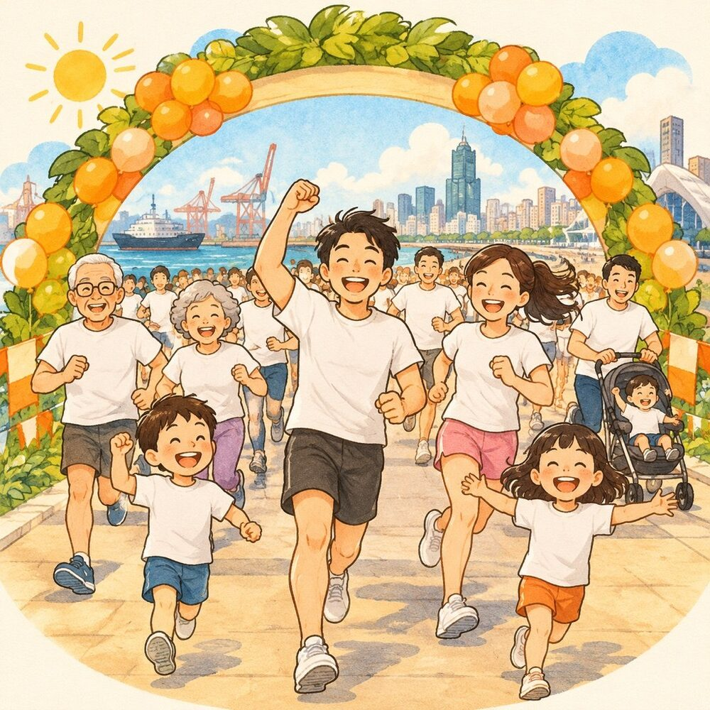

沒有笨點子
一句「我覺得如果……就好了」就是完整的提案。大膽的、天馬行空的、看起來不可能的，都請丟上來。
很多好點子死在「我說出來會不會很蠢？」。所以我們先把話說清楚——在好點子收集中心，下面這幾件事你都不用擔心。

一句「我覺得如果……就好了」就是完整的提案。大膽的、天馬行空的、看起來不可能的，都請丟上來。
我們從「社會真正需要什麼」出發，而不是「你手上有什麼」。先說出需要，資源我們一起找。
想低調？打開匿名就好，點子一樣會被認真看待。
只是一顆種子、還是已經有計畫，都可以。你選它有多熟，我們就從那裡接手。
想交給團隊做、想自己揪人帶隊、或只是需要一點資源——三條路任你選。說出點子，不等於要負全責。
只有第一格是必填。其他的，想到再說。
擲一下靈感骰子，從一個開頭句開始想。

收到點子後，團隊會整理、公開甄選，再依點子的性質分成三條路。這樣做，好點子能落地，也不會把任何一方壓垮。



不知道該選哪條？沒關係，選「先丟再說」，團隊會幫你判斷。

好點子收集中心是一個公益平台，非常歡迎非營利組織加入。你們不只能提點子，也能把第一線看見的需要，變成大家可以一起完成的事。
